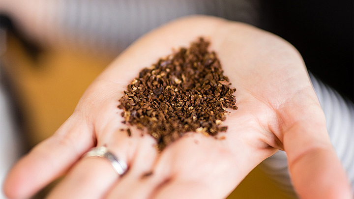
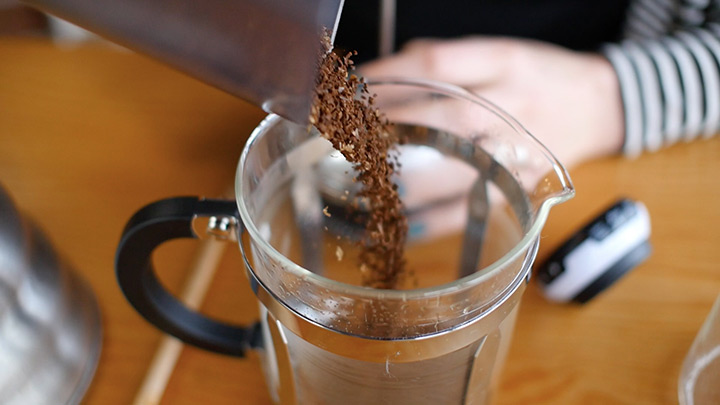
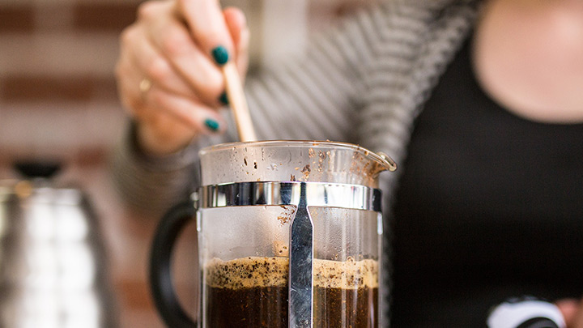
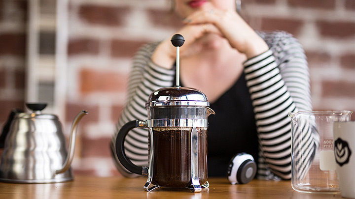
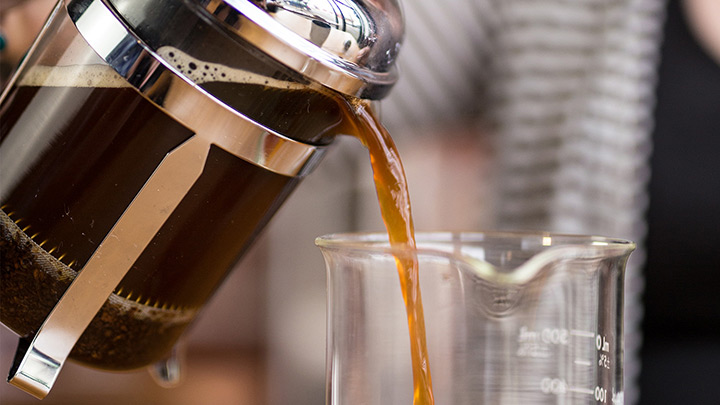

How To Brew French Press Coffee
French pressing coffee is an ancient Franc tradition. If you want a smooth, buttery cup of coffee, stay away from the Americanized coffeemaker and opt for the more manual French Press. It requires a bit more work but your taste buds will thank you!
What you'll need
- French Press
- Coffee Beans
- Boiled Water
- Spoon
Steps
-
Grind Coffee
 -
Add Coffee
 -
Add Water and Stir
 -
Wait
 -
Press, Pour, and Enjoy

All Done!
Now you know how to make a tasty pot of coffee